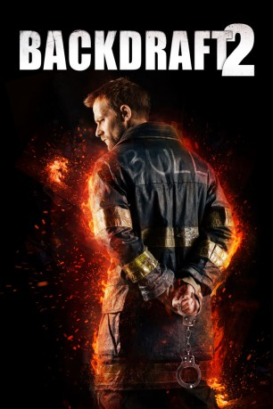

IMDB-Wertung: 4.8 / 10
IMDB-Wertung: 4.8 / 10  Metascore:
Metascore: 
The sequel to the 1991 hit, follows an investigator with the Chicago F.D., who has to track down an arms dealer who use deadly fires as a distraction.
 IMDB-Wertung: 4.8 / 10 Metascore:
The sequel to the 1991 hit, follows an investigator with the Chicago F.D., who has to track down an arms dealer who use deadly fires as a distraction.
Jahr: 2019
Dauer: undefiniert Minuten
FSK: 16
Land: USA Studio: UPHETonspuren: DTS - ,
Untertitel: Deutsch,
Auflösung: 1080p (1920x960) Größe: 4638 MB
Regisseur: Gonzalo López-Gallego
Drehbuch: Gregory Widen
Soundtrack: Randy Edelman
Darsteller:
 Donald Sutherland als Ronald Bartel
Donald Sutherland als Ronald Bartel William Baldwin als Brian McCaffrey
William Baldwin als Brian McCaffrey Alastair Mackenzie als Captain White
Alastair Mackenzie als Captain White Joe Anderson als Sean McCaffrey
Joe Anderson als Sean McCaffrey Mark Arnold als Fire Chief Soto
Mark Arnold als Fire Chief Soto Ross O'Hennessy als Jack
Ross O'Hennessy als JackDatei: X:\2-Dilogie(A-F)\Backdraft\Backdraft 2 (2019, FSK16, 1920x960).mkv seit 23.07.2019
Festplatte: HD Collection-2(A-Z)-3(A-M)
 Alle Filme aus Gruppe '2-Dilogie(A-F)\Backdraft'
Alle Filme aus Gruppe '2-Dilogie(A-F)\Backdraft'